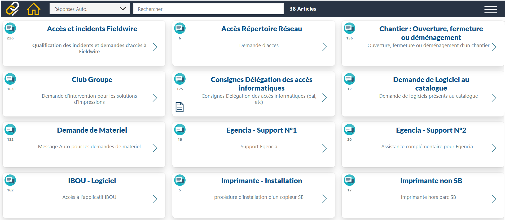
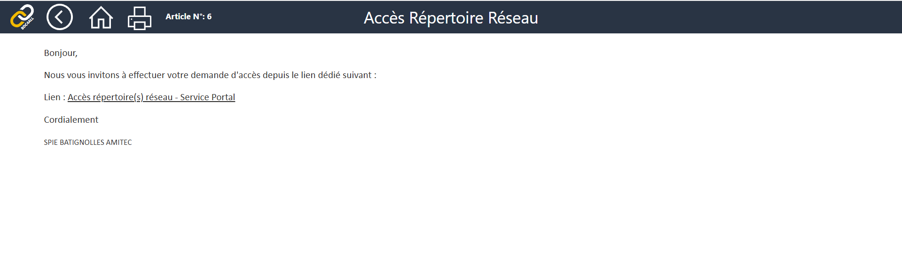

Création de réponses rapides pour accélérer la résolution des tickets
Mission réalisée dans le cadre de mon alternance de technicien informatique (octobre 2024 — septembre 2026), en parallèle du traitement quotidien des tickets sur ServiceNow.
Avec l'équipe, nous avons construit une base de connaissance interne regroupant des réponses rapides : templates de mails et articles KB destinés à standardiser et accélérer le traitement des cas récurrents.
Cette base est aujourd'hui activement utilisée par l'équipe pour gagner en efficacité sur la résolution des tickets — moins de temps passé à reformuler les mêmes réponses, plus de cohérence dans les communications utilisateurs.
Avec mes collègues, j'ai participé à la création des premières réponses rapides qui constituent aujourd'hui le socle de la base utilisée par l'équipe.
J'ai personnellement fait avancer la documentation des procédures liées aux téléphones professionnels : paramétrage VPN, accès aux ressources et dépannages courants.
Écran principal regroupant l'ensemble des réponses rapides classées et accessibles à l'équipe.

🔍 Cliquer pour agrandirDétail d'un article KB : procédure, contexte d'utilisation et template de réponse prêt à l'emploi.

🔍 Cliquer pour agrandir